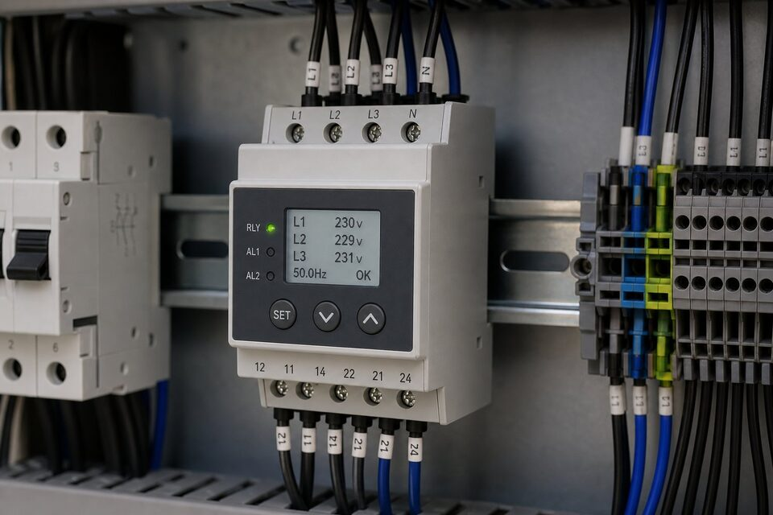

چرا به رله کنترل فاز نیاز داریم؟
شبکه توزیع برق بینقص نیست: فیوزهای سوخته، اتصالات شل و خطاهای شبکه میتوانند یک یا دو فاز را حذف کنند، ولتاژها را نامتقارن نمایند یا توالی فازها را به هم بریزند. الکتروموتورهای سه فاز در برابر این اختلالات بسیار آسیبپذیرند؛ حذف فاز به تنهایی مسئول بخش بزرگی از سوختن موتورهای صنعتی است. رله کنترل فاز با پایش دائم سه فاز و قطع سریع مدار فرمان در شرایط غیرعادی، از این حوادث جلوگیری میکند؛ تجهیز کوچکی که هزینه آن در برابر قیمت موتور و خسارت توقف خط، ناچیز است.

وظایف حفاظتی
- حذف فاز: قطع در نبود یک یا چند فاز.
- توالی فاز: جلوگیری از استارت در جهت چرخش اشتباه.
- عدم تقارن ولتاژ: قطع وقتی اختلاف ولتاژ فازها از حد مجاز بگذرد.
- افت و افزایش ولتاژ: حفاظت در برابر ولتاژ خارج از محدوده.
- برخی مدلها: پایش قطع نول و تاخیرهای قابل تنظیم.
انواع و انتخاب
رلههای کنترل فاز در دو دسته کلی قرار میگیرند: مدلهای الکترومکانیکی ساده که وظایف پایه را پوشش میدهند و مدلهای الکترونیکی میکروپروسسوری با قابلیت تنظیم حدود، تاخیرها و نمایش وضعیت. برای موتورهای حساس یا شبکههای با کیفیت متغیر، مدلهای الکترونیکی با امکان تنظیم عدم تقارن و تاخیر قطع انتخاب میشوند. در انتخاب، ولتاژ نامی شبکه، فرکانس، نوع اتصال و محدوده تنظیمات موردنیاز را بررسی کنید. نصب نیز ساده است: رله در تابلو و خروجی آن به صورت سری در مدار فرمان کنتاکتور قرار میگیرد.
نکات کاربردی
رله کنترل فاز باید بخشی از فلسفه حفاظتی موتور باشد، نه تنها لایه آن. اضافه جریان با بیمتان یا رله حرارتی، اتصال کوتاه با فیوز یا کلید و اختلالات شبکه با رله کنترل فاز پوشش داده میشود. در تابلوهای با اینورتر نیز باید توجه داشت که رله کنترل فاز در ورودی اینورتر نصب میشود نه خروجی آن. پس از هر تغییر در شبکه یا تعمیرات که احتمال جابهجایی فازها وجود دارد، توالی فاز باید کنترل شود؛ بسیاری حوادث معکوس شدن چرخش، درست پس از همین تعمیرات رخ میدهند.
جمعبندی
رله کنترل فاز یکی از مقرونبهصرفهترین لایههای حفاظتی در برق صنعتی است: حذف فاز، توالی اشتباه و عدم تقارن را پایش کرده و از سوختن موتورها و خطاهای مکانیکی جلوگیری میکند. با انتخاب مدل متناسب حساسیت شبکه و نصب صحیح در مدار فرمان، این تجهیز کوچک، خسارتهای بزرگ را پیش از وقوع متوقف مینماید.
سوالات رایج
رله کنترل فاز چه وظیفهای دارد؟
ولتاژ سه فاز را به صورت دائم پایش میکند و در شرایط غیرعادی مانند حذف فاز، جابهجایی توالی، عدم تقارن ولتاژ و افت یا افزایش ولتاژ، با قطع مدار فرمان از آسیب تجهیز جلوگیری مینماید.
چرا حذف فاز خطرناک است؟
موتور سه فاز با یک فاز قطعشده، همچنان تلاش به چرخش میکند اما جریان فازهای باقیمانده به شدت افزایش مییابد و سیمپیچها در زمان کوتاه داغ شده و میسوزند؛ این یکی از رایجترین دلایل سوختن موتور است.
توالی فاز چرا اهمیت دارد؟
جهت چرخش موتور به توالی فازها بستگی دارد؛ جابهجایی دو فاز، جهت چرخش را معکوس میکند که در پمپها و کمپرسورها میتواند آسیب مکانیکی یا خطر ایمنی ایجاد کند.
رله کنترل فاز جایگزین بیمتان و اورلود است؟
خیر؛ رله کنترل فاز اختلالات شبکه را پایش میکند و بیمتان و اورلود، اضافه جریان موتور را. اینها مکمل یکدیگرند و حذف هیچکدام به بهانه دیگری درست نیست.
مطالب مرتبط
با ذکر ولتاژ شبکه و وظایف حفاظتی موردنیاز، رله کنترل فاز از برندهای معتبر عرضه میشود.
مشاهده صفحه محصول ← ثبت RFQ همین محصولتامین این تجهیزات را به پیشرو تجهیز فرتاک بسپارید
شرکت پیشرو تجهیز فرتاک تامینکننده تخصصی تجهیزات صنعتی برای پروژههای نفت، گاز، پتروشیمی، فولاد و نیروگاهی است. برای دریافت پیشنهاد فنی و قیمت، استعلام (RFQ) خود را ثبت کنید تا کارشناسان مهندسی فروش در کوتاهترین زمان پاسخ دهند.
- تامین برق صنعتیتجهیزات تابلو و حفاظتی
- تامین تجهیزات صنایع نفت و گازپکیج مواد مطابق وندورلیست